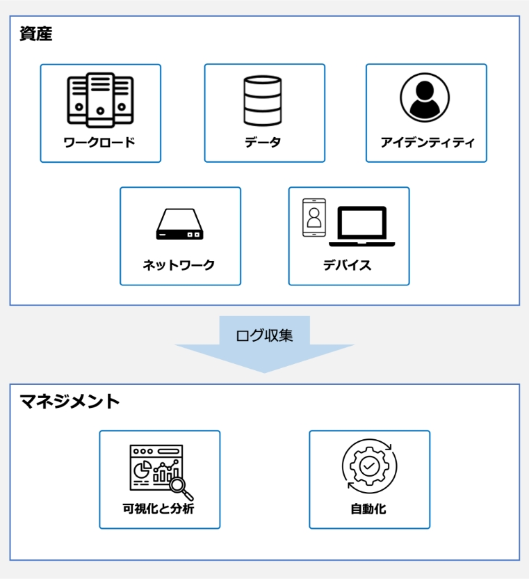
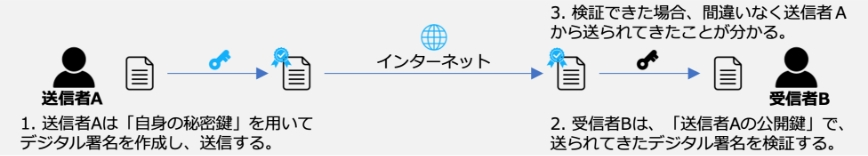

17-2-4. セキュリティ統制
関連する主な管理策
5.1、5.9、5.15～5.18、5.23～5.28、8.1～8.5
セキュリティ統制とは、組織が情報資産を守るために採用するセキュリティ対策や仕組みになります。機密性、完全性、可用性などの情報セキュリティの目標を達成するために監視、記録を行い統制します。
図67. セキュリティ統制の概要図
以下は、セキュリティ統制を確立するための実施例となります。
実施内容（例）
選択すべき管理策（例）
リスク評価と分析
- 組織内の情報資産やプロセスを評価し、セキュリティリスクを特定
- リスクの重要度や影響を評価し、優先順位づけ
5.9 情報及びその他の関連資産の目録
ポリシーの策定
- セキュリティポリシーを作成し、組織内での適用範囲や要件を定義
- ポリシーは法規制や業界のガイドラインに準拠
5.1 情報セキュリティのための方針群
技術的対策の実施
-
資産に対してセキュリティ対策の実施
- ワークロード
- データ
- アイデンティティ
- ネットワーク
- デバイス など
- 5.15 アクセス制御
- 5.16 識別情報の管理
- 5.17 認証情報
- 5.18 アクセス権
- 5.23 クラウドサービスの利用における情報セキュリティ
監視と評価
- セキュリティ対策の効果を監視し、定期的な評価の実施
- セキュリティインシデントが発生した場合は、原因を分析し、対策の改善
- 5.25 情報セキュリティ事象の評価及び決定
- 5.27 情報セキュリティインシデントからの学習
- 5.28 証拠の収集
- 8.15 ログ取得
- 8.16 監視活動
変更管理
システムやポリシーに変更があった場合、セキュリティに影響を与えないように変更管理プロセスを確立
8.32 変更管理
対応計画の策定
セキュリティインシデントが発生した場合の対応計画を策定し、迅速かつ効果的に対処
- 5.24 情報セキュリティインシデント管理の計画及び準備
- 5.26 情報セキュリティインシデントへの対応
SECaaS（Security as a Service）
SECaaSはセキュリティをサービスとして提供します。組織がセキュリティに関する機能をクラウドベースのサービスプロバイダから提供される形態で利用します。従来では、オンプレミスで利用していたセキュリティ機能をクラウドに移行し、サブスクリプションで利用することが可能になります。
SECaaSのメリット
- コスト最適化
- スケーラビリティ
- 変化への柔軟な対応
- 冗長性
- 高い可用性
- 障害耐性
セキュリティ統制を確立するために実施することができる技術を紹介します。
ネットワーク・セキュリティ
SWG（Secure Web Gateway）
Webアクセスを中継するプロキシの一種で、危険なサイトやコンテンツへのアクセスを遮断するセキュリティ機能をクラウドサービスとして実施。（17-2-2.を参照）
SDP（Software Defined Perimeter）
アクセス制御をソフトウェアで制御し、認証とアクセス制御を接続ごとに行うことで、動的なマイクロセグメンテーションおよびセキュアなリモートアクセスを実現。（17-2-2.を参照）
デバイスセキュリティ
EDR（Endpoint Detection and Response）
パソコンやサーバ、スマートフォンなどのエンドポイントデバイスに侵入したマルウェアやランサムウェアなどを検出し、通知するシステム。マルウェア感染後の被害拡大防止に有効。（3-1-1.を参照）
EPP（Endpoint Protection Platform）
パソコンやサーバ、スマートフォンなどのエンドポイントデバイスへのマルウェアの侵入を防御するソリューション。未知のマルウェアの検知・駆除にも対応。
アイデンティティセキュリティ
IAM（Identity and Access Management）
情報システムのユーザIDの管理・認証・認可。
FIDO（Fast Identity Online）
ID/パスワード方式に代わる認証技術。指紋や虹彩といった生体情報、公開鍵暗号、端末ID、ワンタイムパスワードなどを利用した認証方法がある。
ワークロードセキュリティ
CWPP(Cloud Workload Protection Platform)
クラウド上コンテナ（実行環境）や仮想マシンなどに導入し、クラウドワークロード（クラウド上で実行されるプログラムやアプリケーション）の監視と保護を行うソリューション。
データ・セキュリティ
DLP（Data Loss Prevention）
情報漏えい防止を目的とするセキュリティツール。従来のシステムと異なり、データそのものを監視して情報漏えいを防ぐため、高い効果が期待できる。
可視化と分析
CASB（Cloud Access Security Broker）
クラウドサービスの脆弱性対策ソリューション。クラウドサービスの利用状況を可視化すると同時にクラウドへの不正アクセスの検知と防御も可能。（17-2-2.を参照）
SIEM（Security Information and Event Management）
ファイアウォールやIDS/IPSなどから出力されるログやデータを一元的に集約し、集約したデータを組み合わせて相関分析を行うことにより、サイバー攻撃やマルウェア感染などのセキュリティインシデントをリアルタイムで検知。
CSPM（Cloud Security Posture Management）
クラウド環境の設定状況を可視化し、あらかじめ設定したルールに基づいて、不適切な設定や脆弱性の有無を検知。
自動化
SOAR（Security Orchestration Automation and Response）
セキュリティインシデントの監視、データの収集・分析、対応などのセキュリティ運用業務を自動化・効率化する技術。
FIDO（Fast Identity Online）
FIDOは、従来のパスワードによる認証方式に代わる、パスワードを使わない「パスワードレス認証」を実現する技術です。認証には、公開鍵暗号方式を利用したデジタル署名の仕組みが用いられます。
デジタル署名による送信者確認の仕組み
デジタル署名では公開鍵と秘密鍵、2つの鍵を使用します。 公開鍵は公開される誰でも取得できる鍵で、秘密鍵は本人だけが保持している鍵です。秘密鍵で署名したデータは、対となる公開鍵で検証できます。この仕組みを利用し、受信者は送られてきたデータが間違いなく送信者本人から送られてきたか確認できます。
図68. デジタル署名による送信者確認の仕組み
FIDO2
FIDO2とは、パスワードレス認証の技術仕様のことです。FIDO2では、端末で生体認証を行い、利用者を認証します。サーバとは、デジタル署名による本人確認の仕組みを用いて認証します。サーバ側には公開鍵、端末側には秘密鍵が保管され、鍵同士がペアとなります。正式サイトを偽装したフィッシングサイトがログインを求めても、ペアとなる鍵がないためログインを防げます。FIDO2を利用したパスキーという仕組みでは、認証資格情報を複数の端末で同期できるため、機種変更や端末紛失などの場合に、一から作成する必要はありません。
メリット
- 認証に必要な秘密情報（秘密鍵）は、認証を行う端末側のみに保存され、利用する際は生体認証を行うため、パスワードを覚える必要がありません。
- パスワードや認証に必要な機密情報がインターネットに流れず、サーバ側で保存されないため、漏えいのリスクが低減されます。
図69. FIDO2の仕組み
①本人検証依頼
サーバは、ユーザの端末に向けてチャレンジコード（ランダムな文字列）を送信します。
②生体情報を入力
ユーザは生体情報を入力し、端末はユーザを認証します。
③検証結果を送信
ユーザの認証に成功したら、端末はチャレンジコードをユーザの秘密鍵で署名し、サーバへ送信します。
④検証結果の確認
サーバは、署名されたチャレンジコードを受け取ったら、ユーザの公開鍵で検証します。検証に成功するとユーザのログインを受け入れ、認証完了となります。